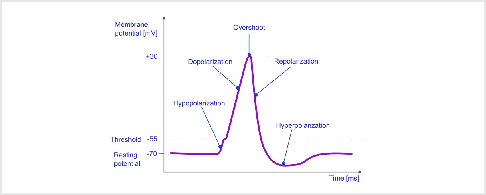
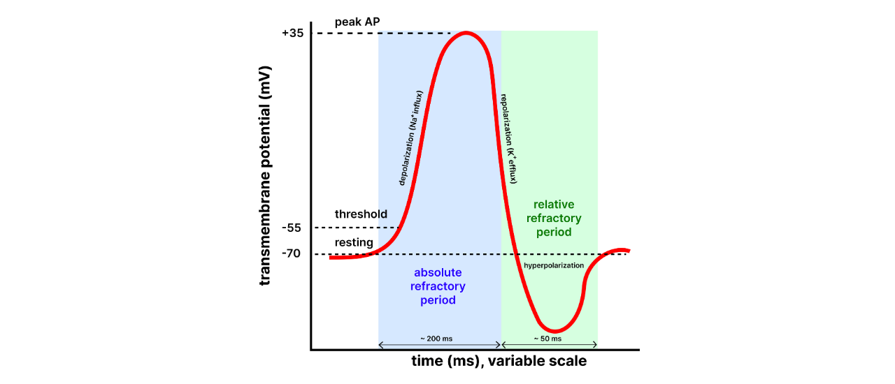
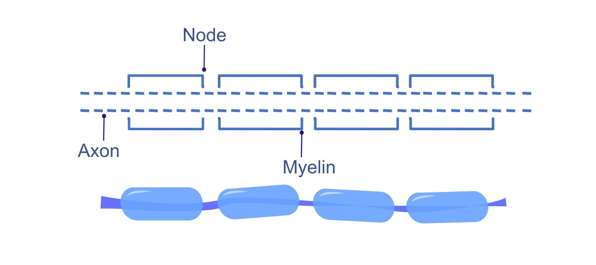

Modul 4 : Potensial Aksi dan Propagasinya#
Potensial aksi adalah perubahan cepat, sementara dalam perbedaan potensial elektrik (tegangan) membran neuron, yang penting untuk mentransmisikan sinyal ke bawah akson. Ini adalah mekanisme fundamental di mana neuron berkomunikasi satu sama lain dan sel lain. Kata lain yang digunakan untuk potensial aksi adalah “spike”. Dalam modul ini, kita akan mempelajari fase, mekanisme dan faktor yang mempengaruhi propagasi potensial aksi. [1]
Selama potensial aksi, potensial elektrik bergerak dari potensial istirahat negatif ke nilai positif, dan mengalami undershoot, dan kemudian kembali ke potensial istirahat. [1]
4.1 Saluran Ion Berpintu Tegangan#
Dalam pelajaran sebelumnya, kita telah mempelajari tentang saluran ion kebocoran pasif yang tidak mampu menghasilkan perubahan cepat dalam potensial membran neuron, jadi di sini kita memerlukan jenis saluran ion baru yang disebut Saluran Ion Berpintu Tegangan.
Saluran berpintu tegangan adalah protein membran khusus yang membuka atau menutup sebagai respons terhadap perubahan dalam potensial membran. Pembukaan dan penutupan terkoordinasi mereka memungkinkan neuron mentransmisikan sinyal dengan cepat dan efektif di seluruh sistem saraf. Potensial aksi timbul dari aktivitas dua saluran ion berpintu tegangan utama: saluran Na⁺ berpintu tegangan dan saluran K⁺. Saluran ini membuka dan menutup pada saat tertentu, menghasilkan aliran ion, yang mengarah ke potensial aksi.

Note
Saluran ion berpintu tegangan membuka ketika potensial membran neuron mencapai nilai tertentu yang disebut nilai ambang. [1]
4.2 Fase Potensial Aksi#

Potensial aksi terdiri dari beberapa fase berbeda, masing-masing ditandai dengan perubahan spesifik dalam potensial membran dan gerakan ion :
Fase Istirahat#
Pada fase istirahat, neuron memiliki potensial istirahat sekitar -70mv, dan saluran natrium dan kalium berpintu tegangan ditutup.
Fase Depolarisasi (Fase Naik) [1]#
Stimulus menyebabkan potensial membran menjadi kurang negatif.
Jika depolarisasi mencapai ambang (sekitar -55 mV), saluran Na⁺ berpintu tegangan membuka.
Ion Na⁺ masuk ke neuron karena gradien elektrokimia, mengarah ke kenaikan cepat dalam potensial membran, sering mencapai +30 mV.
Fase Repolarisasi (Fase Turun) [1]#
Pada puncak depolarisasi, saluran Na⁺ menutup.
Setelah sekitar 1ms, saluran natrium menjadi tidak aktif yaitu saluran diblokir dan saluran kalium menjadi terbuka.
Ion K⁺ keluar dari neuron, menyebabkan potensial membran menurun dan kembali ke tingkat istirahat.
Note
Saluran natrium membuka segera, tetapi saluran kalium membutuhkan waktu. [1]
Fase Hiperpolarisasi (Undershoot) [1]#
Potensial membran sementara menjadi lebih negatif daripada potensial istirahat (sekitar -80 mV) karena pembukaan berkepanjangan saluran K⁺.
Fase ini membuat neuron kurang mungkin menembakkan potensial aksi lain segera.
Kembali ke Fase Istirahat [1]#
Saluran K⁺ menutup, dan pompa natrium-kalium (Na⁺/K⁺ ATPase) memulihkan potensial membran istirahat.
Neuron siap menembakkan potensial aksi lain ketika dirangsang dengan tepat.
4.3 Propagasi Potensial Aksi#
Propagasi potensial aksi mengacu pada gerakan potensial aksi (sinyal elektrik cepat, sementara) sepanjang membran sel yang dapat tereksitasi, seperti neuron atau sel otot. Propagasi potensial aksi memungkinkan komunikasi dalam sistem saraf dan kontraksi otot. Proses ini melibatkan urutan peristiwa yang memastikan sinyal ditransmisikan dari badan sel ke terminal akson, di mana ia dapat memicu pelepasan neurotransmitter atau kontraksi otot.
Potensial aksi biasanya bergerak dalam satu arah sepanjang akson, dari badan sel menuju terminal akson. Ini disebabkan oleh periode refrakter, yang mencegah propagasi mundur. [1]
Periode Refrakter#
Periode refrakter mengacu pada periode waktu setelah potensial aksi di mana neuron tidak mampu menembakkan potensial aksi lain, atau memerlukan stimulus yang lebih kuat dari biasanya untuk melakukannya. Periode ini memastikan bahwa potensial aksi menyebar dalam satu arah (tanpa membalik arah) dan bahwa sel memiliki waktu yang cukup untuk mengatur ulang potensial membrannya ke keadaan istirahat.

Jenis Periode Refrakter#
Periode Refrakter Absolut: [1]#
Definisi: Ini adalah periode selama dan segera setelah potensial aksi ketika neuron sepenuhnya tidak mampu menembakkan potensial aksi lain, tidak peduli seberapa kuat stimulusnya.
Durasi: Ini berlangsung dari awal depolarisasi hingga akhir repolarisasi (sampai potensial membran kembali ke nilai negatif yang cukup). Penyebab: Selama periode refrakter absolut, saluran Na⁺ berpintu tegangan terbuka atau tidak aktif, mencegah depolarisasi lebih lanjut. Gerbang inaktivasi saluran Na⁺ ditutup, yang berarti tidak ada potensial aksi baru yang dapat dimulai sampai mereka diatur ulang.
Signifikansi: Periode ini memastikan bahwa potensial aksi berjalan hanya dalam satu arah sepanjang akson, karena wilayah yang telah mengalami depolarisasi tidak dapat tereksitasi segera. Ini juga mencegah tumpang tindih potensial aksi.
Periode Refrakter Relatif: [1]#
Definisi: Ini adalah periode yang mengikuti periode refrakter absolut, di mana neuron dapat menghasilkan potensial aksi lain, tetapi hanya jika stimulus lebih kuat dari biasanya.
Durasi: Periode refrakter relatif dimulai setelah repolarisasi, biasanya dimulai selama tahap akhir hiperpolarisasi, dan berakhir ketika potensial membran kembali ke tingkat istirahatnya.
Penyebab: Selama periode ini, saluran K⁺ berpintu tegangan masih terbuka, menyebabkan potensial membran lebih negatif dari biasanya (hiperpolarisasi). Meskipun beberapa saluran Na⁺ kembali ke keadaan istirahat dan mampu membuka kembali, tidak semuanya diatur ulang, jadi stimulus yang lebih kuat dari biasanya diperlukan untuk mengatasi keadaan ini.
Signifikansi: Periode refrakter relatif memungkinkan kemungkinan potensial aksi baru tetapi mencegah penembakan berlebihan, memastikan bahwa neuron tidak menembak terlalu sering.
Faktor yang mempengaruhi kecepatan propagasi#
Mielinasi : [1]#
Selubung Mielin: Banyak akson ditutupi mielin, zat berlemak yang mengisolasi akson dan meningkatkan kecepatan propagasi potensial aksi.
Nodus Ranvier: Potensial aksi melompat antara nodus Ranvier (celah di selubung mielin) melalui proses yang dikenal sebagai konduksi saltatori. Ini secara signifikan mempercepat transmisi impuls dibandingkan konduksi kontinyu di akson tidak bermielin.

Diameter Akson : [1]#
Diameter akson memainkan peran penting dalam menentukan kecepatan di mana potensial aksi berjalan sepanjangnya. Secara khusus, diameter akson yang lebih besar menghasilkan transmisi potensial aksi yang lebih cepat. Ini karena akson yang lebih lebar menawarkan resistansi lebih sedikit terhadap aliran ion. Akibatnya, ion natrium dapat bergerak lebih cepat, yang memfasilitasi regenerasi potensial aksi yang lebih cepat di segmen akson yang berdekatan. Pada dasarnya, semakin besar akson, semakin efisien ia dapat menghantarkan sinyal elektrik karena resistansi aliran ion yang berkurang.
Fakta Penting
Ketika mielin rusak, seperti dalam penyakit demielinasi seperti multiple sclerosis, area akson yang sebelumnya terisolasi menjadi terpapar. Ini mengarah ke peningkatan kapasitansi membran yang terpapar, yang berarti ia dapat menyimpan lebih banyak muatan. Akibatnya, ini memungkinkan sebagian arus elektrik bocor keluar dari akson, mengurangi efisiensi transmisi sinyal. Akibatnya, potensial aksi yang mencapai bagian akson yang tidak bermielin ini mulai melemah atau meluruh, mencegahnya berhasil disebarkan lebih jauh sepanjang akson. Pada dasarnya, kehilangan mielin mengganggu aliran sinyal elektrik normal, mengarah ke kegagalan komunikasi antara sel saraf (yaitu, potensial aksi berhenti menyebar).
4.4 Bagian Info Tambahan#
Tetrodotoxin (TTX) adalah neurotoksin kuat yang dikenal untuk memblokir fungsi saraf, mengarah ke paralisis dan berpotensi kematian. Ini ditemukan di hewan tertentu, khususnya ikan buntal (fugu), tetapi juga di organisme laut lainnya, seperti spesies tertentu gurita, newts, dan katak.
4.4.1 Mekanisme Aksi:#
Tetrodotoxin bekerja dengan mengikat secara selektif ke saluran natrium berpintu tegangan di membran sel saraf, memblokir ion natrium memasuki sel. Ini mengganggu potensial aksi, yang penting untuk pensinyalan saraf.
4.4.2 Memblokir Saluran Natrium:#
TTX mengikat ke pori luar saluran natrium berpintu tegangan, mencegah influx ion natrium selama depolarisasi. Ini memblokir generasi potensial aksi.
4.4.3 Efek pada Fungsi Saraf:#
Ketidakmampuan untuk menghasilkan potensial aksi mencegah saraf berkomunikasi satu sama lain, mengarah ke paralisis dan kegagalan pernapasan.
4.4.4 Sumber Tetrodotoxin :#
Tetrodotoxin diproduksi oleh bakteri tertentu, bukan langsung oleh hewan yang membawanya. Hewan ini mengakumulasi TTX melalui diet mereka, biasanya dengan mengonsumsi mikroorganisme penghasil TTX seperti spesies Vibrio tertentu.
Note
Meskipun toksisitasnya, banyak hewan yang membawa TTX tidak terluka olehnya karena adaptasi di saluran natrium mereka, yang mencegah TTX mengikat secara efektif. Tetrodotoxin sangat kuat. Sebanyak 2–3 mg TTX cukup untuk membunuh manusia. Mekanisme di mana ia menyebabkan kematian terutama melalui paralisis pernapasan karena pemblokiran transmisi saraf.
4.4.5 Penelitian Medis dan Penggunaan :#
Meskipun toksisitasnya, TTX telah menarik perhatian dalam penelitian medis untuk potensinya sebagai penghilang rasa sakit dan sebagai alat untuk mempelajari fungsi saluran natrium. Manajemen Nyeri: Karena kemampuannya memblokir saluran natrium dan potensinya menghambat jalur nyeri tanpa mempengaruhi fungsi sensorik lainnya, TTX telah diselidiki untuk penggunaan dalam pengobatan nyeri terlokalisasi (misalnya, pada pasien dengan kondisi nyeri kronis seperti nyeri neuropatik atau nyeri pasca operasi). Penelitian Saluran Natrium: TTX adalah alat berharga dalam neurosains dan farmakologi untuk mempelajari peran saluran natrium dalam fungsi saraf.
Fakta Penting
Ikan buntal dimakan untuk rasa halusnya yang halus dan sensasi kesemutan, mati rasa yang disebabkan TTX ketika dimakan dalam dosis kecil. [2]
4.5 Ringkasan#
Dalam modul ini, kita menjelajahi bagaimana neuron menghasilkan lonjakan elektrik cepat yang disebut potensial aksi, yang memungkinkan komunikasi jarak jauh. Kita belajar bagaimana saluran natrium dan kalium berpintu tegangan membuka dan menutup secara terkoordinasi untuk menghasilkan fase utama potensial aksi: istirahat, depolarisasi, repolarisasi, hiperpolarisasi, dan kembali ke istirahat. Kita mempelajari propagasi potensial aksi, termasuk peran periode refrakter absolut dan relatif, yang memastikan transmisi satu arah dan mencegah penembakan berlebihan.
Kita juga memeriksa faktor yang mempengaruhi kecepatan konduksi, seperti mielinasi (konduksi saltatori) dan diameter akson, dan belajar bagaimana demielinasi mengganggu propagasi sinyal.
Akhirnya, kita melihat Tetrodotoxin (TTX) sebagai contoh bagaimana memblokir saluran natrium dapat menghentikan potensial aksi sepenuhnya. Modul ini membangun fondasi untuk Modul 5, di mana kita mempelajari bagaimana neuron berkomunikasi satu sama lain di sinaps.